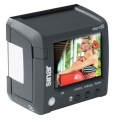

无忌
器材库
全部器材
产品年表
名词百科
榜单
器材库
> 数码后背 > eSprit 65 LV

仙娜
eSprit 65 LV
分类
数码后背
点评
0 条
图片
0 张
评测
0 篇
eSprit 65 LV，采用3160万像素Kodak KAF31600CE CCD，搭载3英寸液晶显示屏，支持实时取景。拍摄速度为0.9fps。
产品类型
数码后背
综合评分
暂无评分
无忌评测
暂无评测
规格参数
网友点评
(0)
产品图 / 样片
(0)
评测文章
(0)
基本参数
发布日期
2010-05-03
厂家推荐价格
7,770.00 （欧元）
影像技术
影像传感器
CCD
解像度
6496×4872
有效像素
3160万
影像传感器尺寸
44×33mm
画幅比
4:3
Live View
支持
存储
静态图像格式
JPEG, RAW, RAW+JPEG, DNG, DNG+JPEG, DNG compressed
静态图像尺寸
[DNG/RAW 16 bit] 60MB, [TIFF 48/24 bit] 181/90MB
记录媒介
CF
曝光控制
快门速度
32 - 1/10000秒
取景器/显示屏
LCD类型
TFT LCD
LCD尺寸
3.0英寸
电源
电池
可充电锂电池
续航能力
可拍摄最多约2000张
备注
工作温度
0-45℃
支持的相机
仙娜 Hy6, 哈苏 V500系列, 哈苏 H1/H2, 玛米亚 645 AFD/AFD II
尺寸
90×87×65mm
重量
590g
软件
Sinar eXposure™ 6.1
该产品暂无存档的网友点评
该产品暂无存档的产品图
评测 / 相关文章
该产品暂无存档的评测文章
相关文章
［资讯］仙娜eMotion 75 LV实时取景数码后背
（存档）